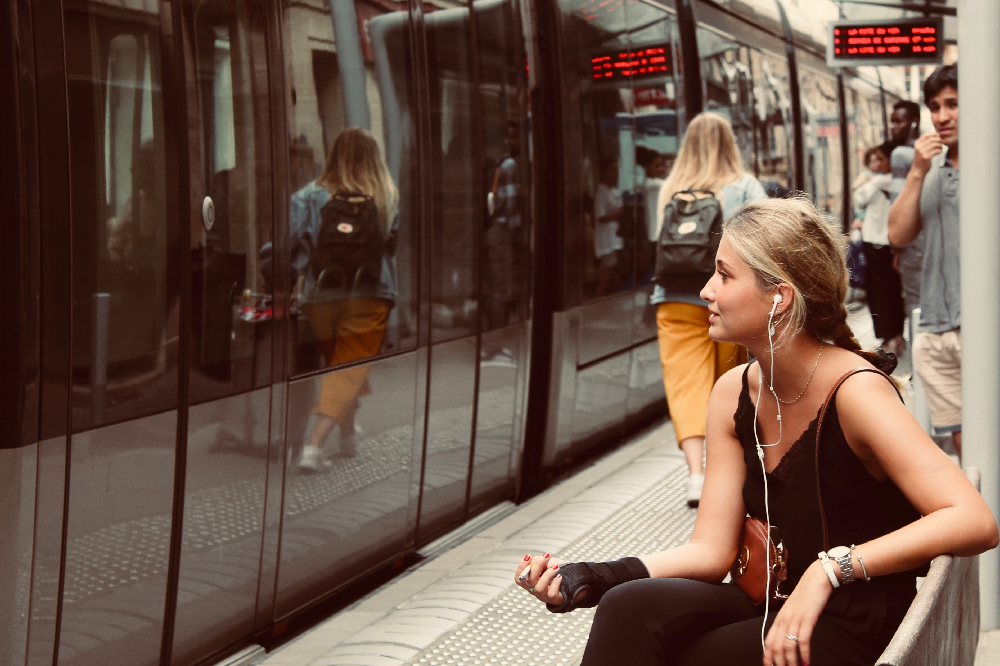
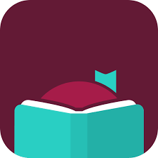

Intrested in getting into reading yourself? Or already love books but can't seem to find the time to spend reading them? No worries at all, you're in the right place! I have certainly been in the latter position myself, and have found some handy tips and tricks to not only get myself out of a reading slump, but to make time for myself to enjoy books even when I am incredibly busy (which I often am as a grad student)!

Invest in an e-Reader

In our digital age, nothing beats the ease and convenience of an e-Reader, and investing in one can put you on the path to success in your reading journey! Not only do e-Readers involve a financial investment, which makes you more likely to actually keep up with your reading to make use of your investment, these devices are also incredibly easy to carry around, so you can read anywhere from the bus to a dentist waiting room.
Audiobooks are your Best Friend!
If you don't love sitting in one place and having to physically read a book, then audiobooks are a great way to enjoy books! Even as someone who has always loved physical books or the act of physically reading, audiobooks are so nice to listen to as I go around the house completing chores or while making the commute to school or work.

Take Advantage of your Local Library


Your local library makes it incredibly easy to access a wide range of books, and they can help you discover the books that match your reading interests. And all without costing an extra cent! It's as easy as googling your nearest library and signing up for a library card. I promise you, you will not regret it!
Additionally, if physical books aren't your thing, you can still access your libraries resources digitally. Most libraries have eBooks and audiobooks available for checkouts via Libby, an iOS and Android app. Millions of books are literally right at your finger tips!
Make Reading a Part of your Routine

Since nobody is really making you read everyday, it's easy to say "Oh I'll just read tomorrow!" But as we all know, that tomorrow never comes. Tomorrow becomes the day after, which becomes the day after, and so on. The best way to fight this never-ending postponing of something you want to make time for is to make a part of a routine, even if it adds just five minutes. For example, if you like to wake-up in the morning and make yourself a cup of coffee, grab a book to enjoy as you drink your coffee. Or if you like to watch Netflix or Youtube before going to bed, maybe switch out that last episode for a chapter of a book instead. This way, we can actually make time for the things that matter.
Happy Reading!